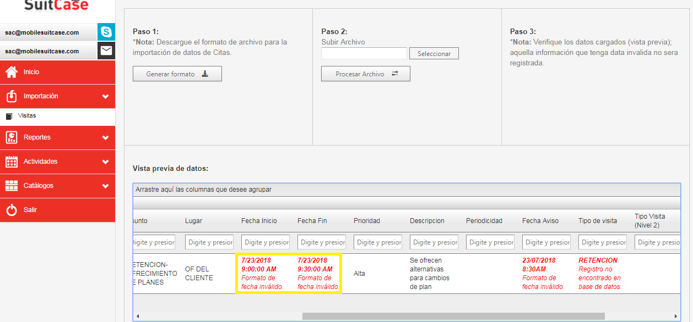
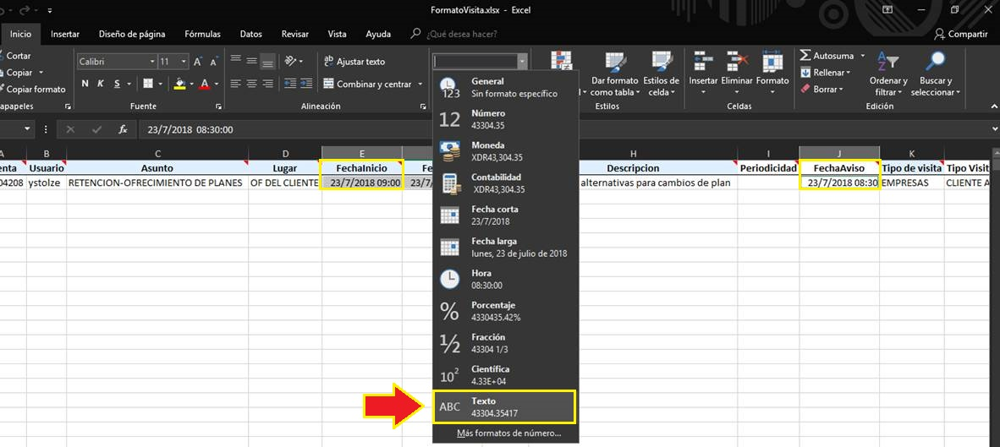
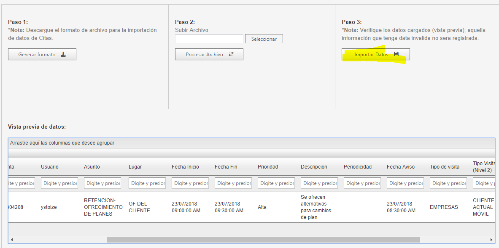
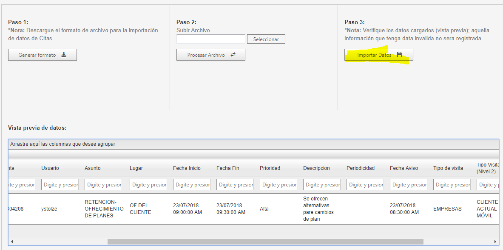

Preguntas frecuentes de la aplicación:
1. ¿Como instalar la aplicación?
En este apartado le explicaremos como instalar la aplicación, a continuación podrá seleccionar si desea consultar el contenido desde un videos, imagenes o inluso descargar el paso a paso a su equipos en un archivo PDF:
2. ¿El equipo no permite instalar la aplicación?
Una de las funciones es poder cargar información de forma masiva y para ello contamos con el módulo de Importación desde el cual podrá descargar y diligenciar un archivo con los datos correspondientes al ingreso de cuentas, asignación de cuentas a usuarios y programación de visitas a los colaboradores en campo. En el siguiente video se explica a detalle los pasos necesarios:
3. ¿Cómo sé el IMEI de mi equipo?
Este no es un error común, pero se puede presentar por el manejo de versiones de nuestro paquete de Office anteriores a la 2016, para superar este inconveniente sin necesidad de actualizar el paquete, solo debes seguir los siguientes pasos:
Mensaje de error: "Formato de fecha inválido"

para evitar que le genere error debemos cambiar el formato de las celdas que contengan fechas una vez se haya diligenciado todas las visitas en el formato teniendo en cuenta los siguientes pasos:
- Seleccionar las celdas con fechas y cambiar a formato texto:

- Aunque en el formato mientras se encuentre en formato texto aparecerá ilegible , al procesar en la plataforma aparecerá de forma correcta las fechas y horas:
 

4. ¿Al instalar la aplicación aparece el mensaje “Su línea no se encuentra activa”?
Hola,Este apartado se encuentra en construcción y pronto quedará lista.
5. ¿Al intentar enviar una alerta me aparece el mensaje “Error en envío de alertas”?
Hola,Este apartado se encuentra en construcción y pronto quedará lista.
6. ¿No aparecen las cuentas, actividades, productos y/o formularios asignados al usuario en la aplicación?
Hola,Este apartado se encuentra en construcción y pronto quedará lista.
7. ¿Al intentar iniciar una visita me aparece un mensaje “Ya existe un evento de tipo visita en estado iniciada”?
Hola,Este apartado se encuentra en construcción y pronto quedará lista.
8. ¿Cómo borrar datos y caché?
Hola,Este apartado se encuentra en construcción y pronto quedará lista.